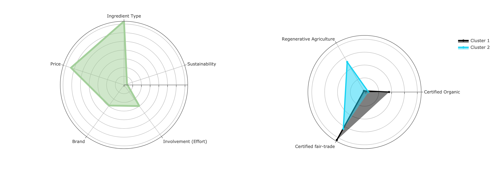

Hello, world!
My name is Khoi 👋
The STEM focus of my academic background has allowed me to hone both my analytical and technical skills, particularly as they apply to management challenges in a technology-driven world. Not just economic and financial literacy, I’m also proficient in data analysis and machine learning, with experience in tools like Python (including libraries like scikit-learn and pytorch), Stata, R, SQL, and Bloomberg Terminal.
Professional Experience
Data Analyst and Assistant Coordinator
In my most recent role, under the supervision of Anton Ochoa, I served for the university's Alternative Testing Program, where I handled critical logistical tasks that supported over 2,000 students and faculty every semester.
I was responsible for administering academic accommodations (which numbered over 930 every week). One of the notable changes I implemented was developing and deploying a system that streamlined course data organization. This tool ultimately helped improve data workflow efficiency by 67%.
Moreover, I am also directly involved on-campus in helping students manage their crises and providing the resources they need to ensure a safe and supportive academic environment.
Business Consultant and Data Analyst
Working with a start-up entering a novel product space, I led a market research project for our client Home Chocolat.
I designed and implemented multi-attribute and clustering models that helped reveal US consumer preferences and market segments, directly contributing to market penetration and product launch strategies. I worked closely with cross-functional teams, providing data-driven insights to improve market readiness for our client.

Macro Research Assistant
At one of Vietnam’s largest investment management firms, I worked under Michael Kokalari, CFA, where I focused on compiling and analyzing macroeconomic data during the COVID-19 pandemic.
I provided socio-economic and financial updates for senior economists, mastering financial tools like the Bloomberg Terminal and Excel. My work produced reports that drive strategic fund management strategies, as I timely provided critical insights on changing market trends.
Market Engagement & Enforcement
Earlier in my career, I had the opportunity at the leading mobility-as-a-service provider of Southeast Asia. The experience I gained here was particularly valuable, as this period coincided with the onset of the COVID-19 pandemic, which had a profound impact on digital business operations worldwide.
In this role, I facilitated crisis management strategies that mitigated potential losses by 45%, in response to market shocks.
My work here saw constant engagement with drivers and users to gather feedback, from which I devised digital assets and logistical support for campaigns. These efforts ultimately helped reinforce brand trust within a partnership with over 200,000 drivers and user base exceeding a million.

Media Coordinator and Editor
During my undergraduate years, I was responsible for the creative productions of my college's flagship newsletter.
For 4 years, I developed content and designed digital assets, managing communication with over 1,000 students annually.
This experience laid the foundation for my communication skills and my ability to manage projects with fast turnaround times, while ensuring clear, effective messaging in a fast-paced environment, requirements that are seen in my later positions.

Miscellaneous works and projects
-
CaptionIQ: Enhancing Social Media Engagement Through Automated Caption Generation
Faculty Advisors: Professors Lutz Finger, Jingwei Zhang, and Emaad Manzoor
AbstractWith the increasing importance of captions in driving user engagement on social media platforms, social media users often encounter difficulties in crafting engaging wording, leading to suboptimal post performance. CaptionIQ seeks to alleviate these challenges by offering a user-friendly interface that enables users to generate multiple high-quality captions efficiently. Preliminary testing performance metrics achieved by our algorithms are quite promising, indicating a strong ability to distinguish between high-quality and low-quality captions (0.789 AUC-ROC), coupled with a relatively high level of overall accuracy (0.70) and precision (0.71) in its predictions. CaptionIQ envisions establishing a direct relationship with its users, primarily social media specialists, influencers, and content creators. The tool's scalability and potential profitability make it an attractive investment opportunity, with monetization avenues including subscription models, partnerships with social media management platforms, and sponsored content deals.
-
Crafting Delights: Unwrapping Consumer Appetite for Chocolate-making Kits – A conjoint analysis for Home Chocolat
Faculty Sponsors: Professors Stephen Shu and David Just
AbstractAs the demand for experiential consumption rises, the emergence of do-it-yourself (DIY) chocolate kits offers a unique avenue for consumers to engage in artisanal chocolate-making from the comfort of their homes. Drawing upon the theoretical framework of the experiential advantage in consumption, we aim to understand how the DIY chocolate-making experience fulfills consumers' psychological needs. Through a quantitative-method approach encompassing surveying consumer demographics and conducting choice-based conjoint analysis, our findings accentuated the overarching influence of socio-familial bonding experiences and convenience in driving consumer interest, reflecting broader societal trends towards experiential consumption and convenience-driven purchasing decisions. Key discoveries from clustering algorithm reveals somewhat behaviorally distinct but demographically identical consumer segments. Our discussion provides valuable insights into understanding consumer preferences within the underexplored domain of DIY chocolate kits, offering actionable implications for product refinement and effective marketing strategies, especially for our client Home Chocolat.
 -
Contagion in Motion: Unraveling Emergent Behaviors of Pathogen Mutation in Mobility Networks
Faculty Advisor: Professor Chad Westphal
AbstractModeling the spread of infectious diseases has been an increasingly critical component in understanding and mitigating their impact, especially more so in recent years. The classic Susceptible-Infected-Recovered (SIR) model framework has been a powerful tool but with limitations. There has been much debate on the effectiveness of said models, considering the complex, dynamic, and inherently heterogeneous nature of human mobility. Utilizing Python, this study explores the use of scale-free and grid mobility networks and gauges how well they can model compared to other more complex systems and real-world epidemics. Key results show that our simulations perform incredibly well despite their simplicity in inputs. Even with no inherent constraints for mutations on infectivity and mortality, our simulated diseases still evolved to spread more readily and to kill their hosts less often. These findings provide more evidence to the relevance of less I/O-intensive systems in studying epidemic spreads and identifying effective strategies for disease control, particularly in situations where more complex models may not be applicable or compilable.
-
Impacts on Income Inequality from the Aftereffects of Financial Crisis, with Market Expectations and Macroeconomic Factors
Faculty Sponsor: Professor Sujata Saha
AbstractRecent decades have seen the distribution of income affected by multiple factors, especially with the recent financial crisis. This paper analyzes the aftereffects of the 2007–09 Great Recession on income inequality, in combination with market expectations and macroeconomic factors, across 15 countries. Annual data is collected for the period between 2004 and 2018, from upper-high-, lower-high-, and middle-income economies. Key results provide more evidence to the expected rise in income inequality across all-country income groups. Additionally, rising per-capita income in all panels is expected to translate to the narrowing income gap post-crisis. This paper also notes that expansionary monetary policies can have stabilizing effects on the income gap in all country-income groups involved.

Personal
In fact, for the longest time, I've been experimenting with amateur photography and graphic design, as well as theater. You can peruse my portfolio as well as my Instagram where I occasionally post snapshots of scenes that I like.
I also love cycling and regularly biked through city traffic in Vietnam. To me, doing so provides me a sense of freedom and a way to unwind and clear my mind after a busy day.

Finally, I recently have started to dabble in playing MMORPG games and have generally enjoyed the experience with friends thus far.